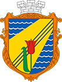

Красноперекопск
Красноперекопск — Яндекс Карты
Красноперекопск — город в северной части Крыма. Административный центр Красноперекопского района, в состав которого не входит. Образует городской округ Красноперекопск как единственный населённый пункт в его составе.

К карте
Информация